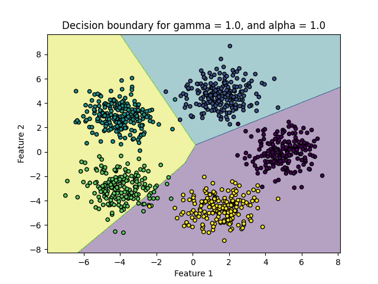
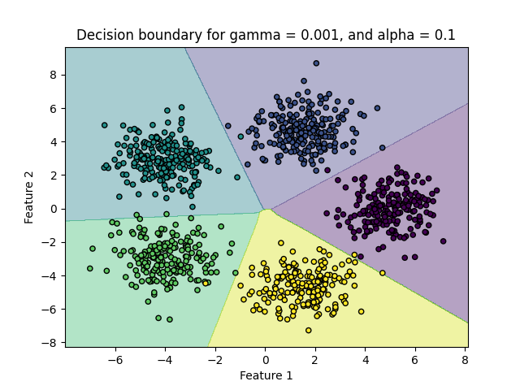
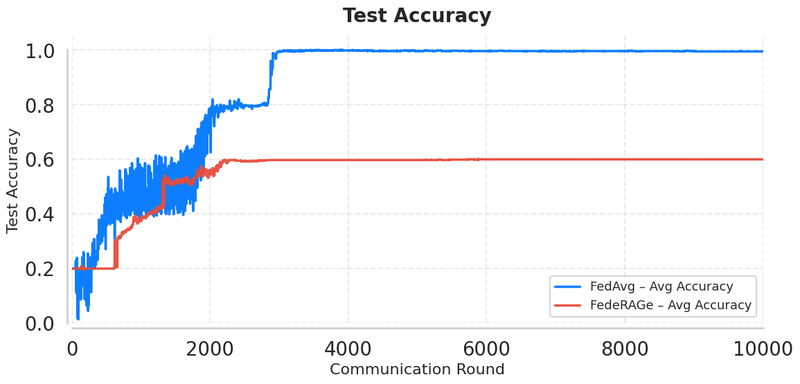
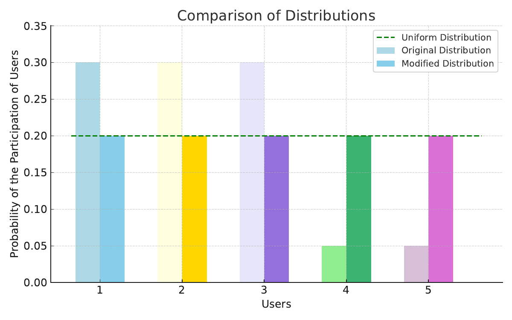

When nobody knows which clients participate, uniform aggregation is not a hack — it minimizes a participation-weighted stochastic objective at the standard rate. FedeRage adds risk-aversion so infrequent, high-loss clients pull more weight, with proofs to match.
With participation unknown, possibly skewed, and varying in size, uniform aggregation minimizes a well-defined stochastic objective weighted by the participation-induced marginal — at the standard rate for convex, possibly nonsmooth losses.
FedeRage folds Conditional Value-at-Risk into local objectives under distributional robustness, implicitly upweighting the clients that lose most and show up least, at minimal extra cost.
Accuracy tables across three vision datasets against FedAvg and Scaffold-style baselines.




Source table · Test accuracy (%) ± standard deviation for FedAvg, , Scaffold, and on MNIST, Fas (4 rows)
| Algorithm | Uniform | Non-Uniform | Uniform | Non-Uniform | Uniform | Non-Uniform |
|---|---|---|---|---|---|---|
| FedAvg | 79.54 | 78.19 | 75.08 | 61.82 | 51.43 | 50.61 |
| FedProx | 79.19 | 77.85 | 75.11 | 61.82 | 52.18 | 50.25 |
| Scaffold | 96.95 0.26 | 95.01 | 84.24 | 77.36 | 51.21 | 50.57 |
| FedeRage | 96.02 | 95.91 0.41 | 83.99 1.71 | 83.95 1.03 | 57.41 1.51 | 56.34 0.61 |
Abstract
Federated learning (FL) enables collaborative model training without sharing raw data, but its performance degrades under non-IID data and stochastic client participation. Remedies built on classical Federated Averaging (FedAvg) typically presuppose that client participation probabilities are known to the server, which is rarely the case in deployed systems. We first discuss and then characterize the optimization problem that \emph{distributionally agnostic} FedAvg actually solves when participation is entirely unknown, possibly highly skewed, and of variable size across rounds: uniform aggregation is shown to minimize a well-defined stochastic objective, weighted by the participation-induced marginal, at a standard $\mathcal{O}(1/\sqrt{T})$ rate for convex and possibly nonsmooth losses. Building on this characterization, we propose \emph{Federated Risk-Averse Averaging} (\textsc{FedeRage}), a risk-averse extension of FedAvg that embeds the \emph{Conditional Value-at-Risk} (CVaR) into the local objective within a natural distributionally robust optimization (DRO) framework. \textsc{FedeRage} implicitly upweights high-loss and infrequently participating clients while adding only a \emph{single scalar per-client}, and admits an $\mathcal{O}(κ/\sqrt{T})$ rate in which the factor $κ$ is the upper bound on the ``price" of risk aversion. In contrast with aggregation-alignment schemes based on optimal transport, which require the availability distribution as an input, \textsc{FedeRage} remains agnostic to it. Several experiments on three heterogeneous benchmarks indicate consistent improvements over state-of-the-art methods in accuracy, fairness, and convergence speed.